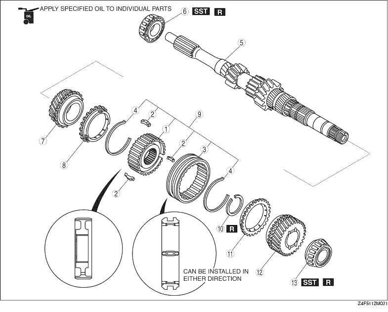

1. Assemble in the order shown in the figure.

|
1 |
3rd/4th clutch hub |
|
2 |
Synchronizer keys |
|
3 |
3rd/4th clutch hub sleeve |
|
4 |
Synchronizer key springs |
|
5 |
Primary shaft gear |
|
6 |
Bearing (primary shaft end) |
|
7 |
3rd gear (See 3rd Gear, 3rd Synchronizer Ring, and 3rd/4th Clutch Hub Component Assembly Note) |
|
8 |
3rd synchronizer ring (See 3rd Gear, 3rd Synchronizer Ring, and 3rd/4th Clutch Hub Component Assembly Note) |
|
9 |
3rd/4th clutch hub component (See 3rd Gear, 3rd Synchronizer Ring, and 3rd/4th Clutch Hub Component Assembly Note) |
|
10 |
Retaining ring |
|
11 |
4th synchronizer ring (See 4th Synchronizer Ring, 4th Gear, and Bearing (4th Gear End) Assembly Note) |
|
12 |
4th gear (See 4th Synchronizer Ring, 4th Gear, and Bearing (4th Gear End) Assembly Note) |
|
13 |
Bearing (4th gear end) (See 4th Synchronizer Ring, 4th Gear, and Bearing (4th Gear End) Assembly Note) |
1. Install the synchronizer key springs in the clutch hub with the hooks in the grooves to hold the three synchronizer key in place.
2. Align the synchronizer ring grooves with the synchronizer key during assembly.
1. Install the new bearing using the SST.
1. Install the 3rd gear, 3rd synchronizer ring, and 3rd/4th clutch hub component using a press.
1. Install the 4th synchronizer ring, 4th gear, and a new bearing using the SST.
2. Measure the clearance between the 3rd gear and 2nd gear.
3. Measure the clearance between the 4th gear and bearing.